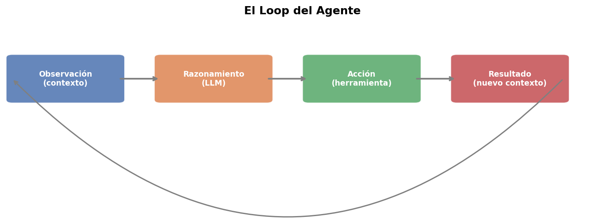

Hoy: los modelos como agentes que toman decisiones y actúan
Diferencia clave: un LLM genera texto; un agente resuelve tareas
Meta: construir un agente funcional desde cero con la API de Claude
💭 ¿Cuándo deja de ser un chatbot y se convierte en un agente?
¿Qué es un Agente?
Definición
Un agente es un sistema que:
Percibe su entorno (texto, datos, resultados de herramientas)
Razona sobre qué hacer (LLM)
Actúa ejecutando herramientas o código
Observa el resultado y repite
💭 La diferencia no está en el modelo. Está en el loop.
El Loop del Agente
Ciclo fundamental

El loop continúa hasta:
Tarea completada
Límite de pasos alcanzado
Error irrecuperable
Agente vs Llamada Simple
Comparación
Llamada simple
Agente
Pasos
1
Múltiples
Herramientas
No
Sí
Estado
No
Sí
Decisiones
No
Sí
Ejemplo: "¿Cuánto gasté en enero?" requiere buscar datos, sumar, interpretar.
IA vs Procesos Deterministas
El espectro de control
Determinista <------------------------> IA pura
| |
Código puro LLM sin código
(exacto, rígido) (flexible, impreciso)
| |
+------------ Agentes ---------------+
(lo mejor de ambos)
Regla práctica
Usar código determinista para:
Cálculos matemáticos exactos
Consultas a bases de datos
Transformaciones de datos
Validaciones de formato
Usar IA para:
Interpretar lenguaje natural
Decidir qué acción tomar
Sintetizar y explicar resultados
💭 El agente decide qué hacer. El código determinista lo ejecuta.
Tipos de Prompts
Los tres roles
mensajes = [
{"role": "system",
"content": "Eres un asistente financiero..."},
{"role": "user",
"content": "¿Cuánto gasté en comida?"},
{"role": "assistant",
"content": "Según los datos de enero..."},
{"role": "user",
"content": "¿Y en transporte?"},
]
System Prompt
Componentes esenciales
Persona: quién es el agente y cuál es su función
Instrucciones: qué puede y qué no puede hacer
Herramientas disponibles: qué tiene a su disposición
Formato de respuesta: cómo debe presentar resultados
Restricciones de seguridad: límites del comportamiento
💭 Un buen system prompt es la diferencia entre un agente útil y uno impredecible.
User y Assistant Messages
Construcción del contexto
El historial de mensajes es la memoria del agente:
User: "¿Cuánto es la suma de mis gastos de enero?"
v
Modelo: [stop_reason = "tool_use"]
solicita -> consultar_gastos(mes="enero")
v
Tu código: carga gastos.json, filtra enero -> [280, 45, 30, ...]
v
Modelo: recibe lista -> calcular(expresion="sum([280, 45, 30, ...])")
v
Tu código: eval -> 885.5
v
Modelo: [stop_reason = "end_turn"]
"En enero gastaste $885.50 en total."
stop_reason
Las dos respuestas del modelo
"end_turn" → el modelo terminó, extrae el texto final
"tool_use" → el modelo quiere usar una herramienta:
Extrae nombre y parámetros
Ejecuta la función correspondiente
Añade el resultado al historial
Vuelve a llamar al modelo
while respuesta.stop_reason == "tool_use":
# ejecutar herramientas y continuar
pass
Seguridad en Herramientas
Principio de mínimo privilegio
Validar entradas antes de ejecutar
Nunca usar eval() sin lista blanca de funciones permitidas
Limitar acceso a sistema de archivos y red
Registrar (log) todas las llamadas a herramientas
Imponer límites: máximo de pasos, timeout, costo
💭 Con grandes herramientas vienen grandes responsabilidades.
Ejemplo Práctico
Agente Asistente Financiero
Herramientas disponibles:
calcular(expresion) — operaciones matemáticas
obtener_fecha() — fecha actual
consultar_gastos(categoria, mes) — lee gastos.json
Pregunta de ejemplo:
"¿Cuánto gasté en alimentación y transporte en enero? ¿Cuál fue el porcentaje de cada categoría?"
El agente decide el orden y la combinación de llamadas.
Idea clave de la sesión
El agente es un loop
Los agentes son:
Un loop: observar → razonar → actuar
Híbridos: IA para razonar, código determinista para ejecutar
Controlados por prompts: el system prompt define el comportamiento
Extensibles: más herramientas = más capacidades
El modelo no cambia. Lo que cambia es lo que puede hacer.
Resumen
Conceptos vistos
Definición de agente y el loop
IA vs procesos deterministas
Tipos de mensajes: system, user, assistant
Definición de herramientas (JSON schema)
Ciclo completo de tool use
stop_reason y el loop del agente
Agente funcional con la API de Claude
💭 Ahora sabes cómo darle "manos" a un LLM
Próxima sesión
Agentes Avanzados
Patrones de razonamiento: ReAct, Plan-Execute, Chain-of-Thought